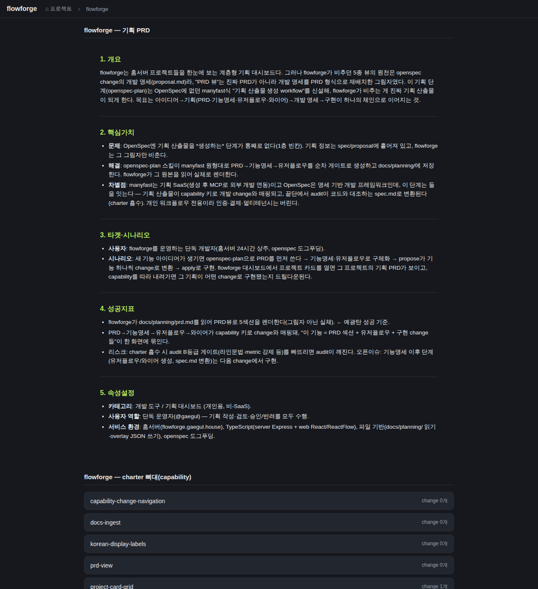

검증일: 2026-06-28T23:20:00+09:00 · 환경: server(applicable: npm test/build), web(applicable: vite build + Playwright chromium), android(SKIPPED: gradle/android 없음), ios(SKIPPED: macOS 필요, 호스트 Linux) · run: run-20260628-2320
PASS 8 · FAIL 0 · 검증 안 함 0 · SKIPPED 0
| Requirement | Scenario | Layer | 검증 수단 | 탐지 근거(basis) | 결과 | 증거 |
|---|---|---|---|---|---|---|
| openspec-plan 스킬이 PRD를 생성한다 | PRD 5섹션 생성 (개요·핵심가치·타겟·시나리오·성공지표·속성설정) | server | 도그푸딩 산출물 docs/planning/prd.md 실재 + 5섹션 헤더 grep | grep -c '^## ' docs/planning/prd.md = 5, 5섹션 제목 일치 | ✓ PASS | ## 개요 / ## 핵심가치 / ## 타겟·시나리오 / ## 성공지표 / ## 속성설정 (5개 헤더 실재) |
| openspec-plan 스킬이 PRD를 생성한다 | 빈 섹션은 지어내지 않는다 (일부 섹션만 있으면 나머지 empty:true 표면화) | server | 단위 테스트 docsPlanningPrd.test.ts '일부 섹션만 있으면 나머지는 empty:true' | npm test -w server -- docsPlanningPrd (재실행 PASS) | ✓ PASS | 테스트: 개요만 있는 입력 → overview empty=false, metrics empty=true, body='' (지어내지 않음) |
| PRD는 charter 상주문서와 분리된 위치에 저장된다 | 신규 디렉토리 docs/planning/에만 쓰고 charter docs(docs/PRD.md·docs/spec.md)는 변경 안 함 | server | git status로 charter docs 무변경 확인 + 도그푸딩 PRD는 docs/planning/prd.md에만 신규 생성 | git status -sb docs/PRD.md docs/spec.md = 변경 없음; docs/planning/prd.md만 신규 add | ✓ PASS | charter docs/PRD.md·docs/spec.md 이번 change에서 미변경(git). docs/planning/prd.md 신규 생성만. |
| flowforge가 docs/planning/prd.md를 읽어 PRD를 제공한다 | planning PRD 조회 성공 — GET /api/docs/flowforge/planning-prd → 200 + 5섹션 | web | 런타임 API curl (서버 DOCS_ROOT=/home/gaegul 기동) | detect: server/ + web/ 워크스페이스 존재; 런타임 8899 | ✓ PASS | curl status=200, sections=5 ['overview','value','target','metrics','attributes'] |
| flowforge가 docs/planning/prd.md를 읽어 PRD를 제공한다 | 파일 없으면 안전한 4xx (없는 project → 404, 500 아님) | web | 런타임 API curl 없는 project | GET /api/docs/nope-not-real/planning-prd | ✓ PASS | curl status=404 (500 아님, safe-4xx) |
| flowforge가 docs/planning/prd.md를 읽어 PRD를 제공한다 | 경로 조작(..) 차단 — resolveDocsDir 경로안전으로 디렉토리 밖 미접근 | web | 런타임 API curl 경로조작 페이로드 | GET /api/docs/..%2f..%2fetc/planning-prd | ✓ PASS | curl status=404 (resolveDocsDir이 .. 및 비화이트리스트 차단) |
| 렌더된 PRD는 docs/planning/prd.md 원본을 비춘다 | PrdPanel에 5섹션 렌더 (기존 컴포넌트 재사용) | web | Playwright 실픽셀 — flowforge 카드 클릭 → skeleton 단계 [data-testid=planning-prd] 패널 | headless chromium, button.pg-card(flowforge) 클릭 | ✓ PASS |  |
| 렌더된 PRD는 docs/planning/prd.md 원본을 비춘다 | 원본 내용 일치 — planning/prd.md 고유 문구가 화면에 표시(proposal 변환 아님) | web | Playwright 패널 innerText에 원본 고유문구 포함 확인 | hasUniqueOriginalPhrase: '그림자'/'1층 빈칸' 포함 | ✓ PASS |
| Requirement | null | 빈값 | 잘못된타입 | 경계값 | 에러경로 | 동시성 | 대량 | 특수문자 | 판정 |
|---|---|---|---|---|---|---|---|---|---|
| openspec-plan 스킬이 PRD를 생성한다 | N/A | ✓ | N/A | N/A | ✓ | N/A | N/A | ✓ | ✓ 충분 |
| PRD는 charter 상주문서와 분리된 위치에 저장된다 | N/A | N/A | N/A | N/A | N/A | N/A | N/A | N/A | ✓ 충분 |
| flowforge가 docs/planning/prd.md를 읽어 PRD를 제공한다 | N/A | ✓ | N/A | N/A | ✓ | N/A | N/A | ✓ | ✓ 충분 |
| 렌더된 PRD는 docs/planning/prd.md 원본을 비춘다 | N/A | ✓ | N/A | N/A | ✓ | N/A | N/A | ✓ | ✓ 충분 |
✓=covered · N/A=해당없음(사유 hover) · ✗=missing. happy-path만이면 검증 불충분 → 최종 FAIL 차단.
| Layer | 상태 | ran | passed | failed | 근거/사유 |
|---|---|---|---|---|---|
| server | ✓ PASS | 8 | 8 | 0 | server/ 워크스페이스(jest); planning 테스트 8개(docsPlanningPrd 4 + planningPrd 4) 재실행. 전체 116/116. |
| web | ✓ PASS | 6 | 6 | 0 | web/ 워크스페이스(vite build+typecheck PASS); 런타임 API 3 + Playwright 실픽셀 2 + 빌드. 콘솔에러 0. |
| android | – SKIPPED | 0 | 0 | 0 | 적용 불가: 안드로이드 레이어 없음 |
| ios | – SKIPPED | 0 | 0 | 0 | macOS 필요 |
✓ PASS 통과
archiveGate.open = true (PASS일 때만 true). verify.json이 이 값을 archive 게이트에 전달.
{kind=link}